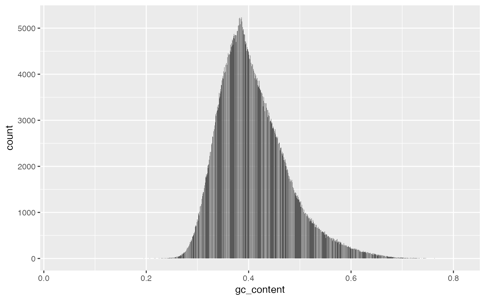
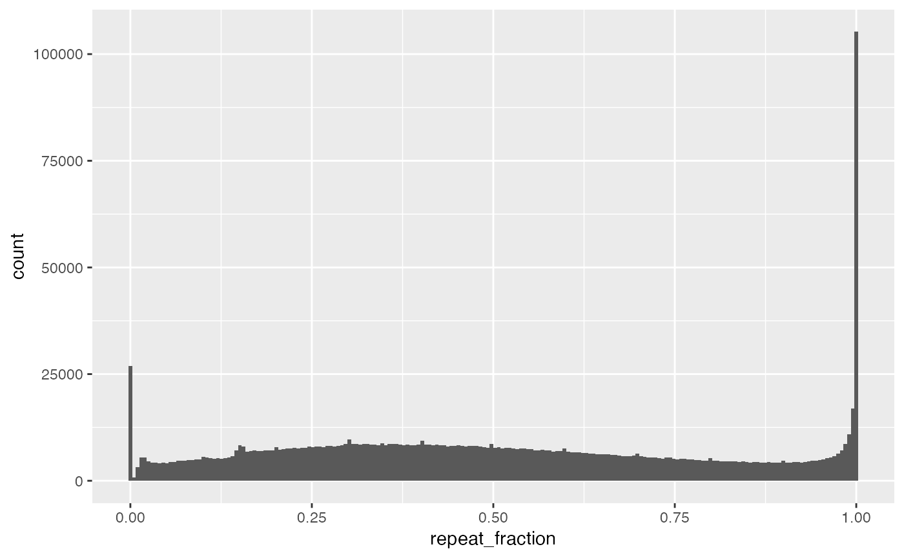

gc_repeat_data.RdA data frame containing genomic intervals with computed sequence metrics including GC content, repeat fraction, and a predicted coverage score based on a linear model. This data frame was created using a vectorized approach that extracts sequences from a reference FASTA file and uses RepeatMasker annotation to compute the fraction of each interval covered by repeats.
gc_repeat_dataA data frame with 7 variables:
A character vector indicating the chromosome or sequence name (e.g., "chr1").
An integer vector specifying the start coordinate of each genomic interval.
An integer vector specifying the end coordinate of each genomic interval.
An integer vector indicating the width of each interval (typically end - start + 1).
A numeric vector representing the fraction of nucleotides that are either G or C in each interval.
A numeric vector giving the fraction of each interval that overlaps with annotated repeat regions.
A numeric vector containing the predicted coverage score for each interval, calculated from a linear model using gc_content and repeat_fraction as predictors.
Generated by processing genomic coverage data, reference genome sequences, and RepeatMasker annotations.
This dataset is intended for use in analyses aiming to correct read
depth for sequence-specific biases. The predicted_score is derived from a
linear regression model of observed coverage against gc_content and
repeat_fraction. Such a model can be used to adjust raw copy number estimates.
# View the first few rows of the data frame
head(gc_repeat_data)
#> seqnames start end width gc_content repeat_fraction predicted_score
#> 1 chr1 132001 134000 2000 0.6145 0.0000 24.26405
#> 2 chr1 134001 136000 2000 0.5765 0.1545 25.54429
#> 3 chr1 136001 138000 2000 0.6800 0.0000 21.71254
#> 4 chr1 138001 140000 2000 0.5745 0.1465 25.63255
#> 5 chr1 140001 142000 2000 0.4845 0.8565 28.21922
#> 6 chr1 142001 144000 2000 0.4340 0.6195 30.49325
# Plot a histogram of GC content
ggplot2::ggplot(gc_repeat_data, ggplot2::aes(x = gc_content)) +
ggplot2::geom_histogram(bins = 2000)

# Plot a histogram of repeat fraction
ggplot2::ggplot(gc_repeat_data, ggplot2::aes(x = repeat_fraction)) +
ggplot2::geom_histogram(bins = 200)

# Fit a linear model using gc_content and repeat_fraction to predict the score
mod <- lm(predicted_score ~ gc_content + repeat_fraction, data = gc_repeat_data)
summary(mod)
#>
#> Call:
#> lm(formula = predicted_score ~ gc_content + repeat_fraction,
#> data = gc_repeat_data)
#>
#> Residuals:
#> Min 1Q Median 3Q Max
#> -1.000e-13 0.000e+00 0.000e+00 0.000e+00 4.345e-09
#>
#> Coefficients:
#> Estimate Std. Error t value Pr(>|t|)
#> (Intercept) 4.820e+01 2.084e-14 2.313e+15 <2e-16 ***
#> gc_content -3.895e+01 4.707e-14 -8.276e+14 <2e-16 ***
#> repeat_fraction -1.295e+00 1.071e-14 -1.209e+14 <2e-16 ***
#> ---
#> Signif. codes: 0 ‘***’ 0.001 ‘**’ 0.01 ‘*’ 0.05 ‘.’ 0.1 ‘ ’ 1
#>
#> Residual standard error: 3.767e-12 on 1419008 degrees of freedom
#> Multiple R-squared: 1, Adjusted R-squared: 1
#> F-statistic: 3.429e+29 on 2 and 1419008 DF, p-value: < 2.2e-16
#>